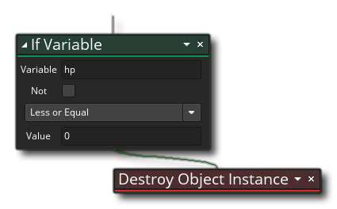
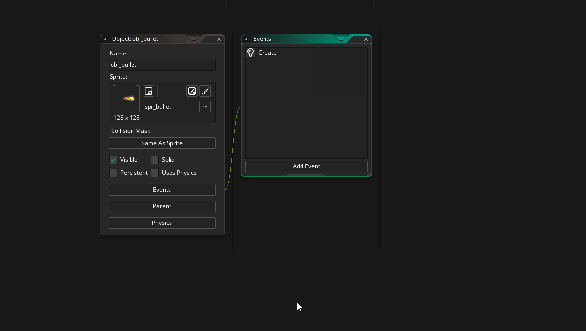
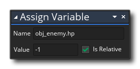
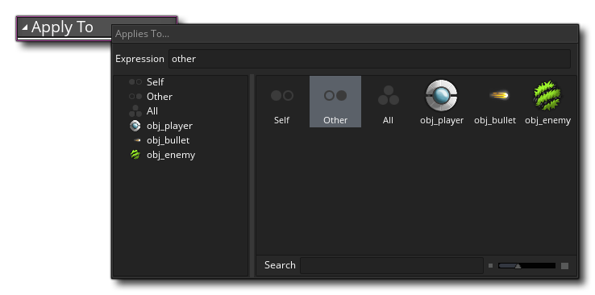
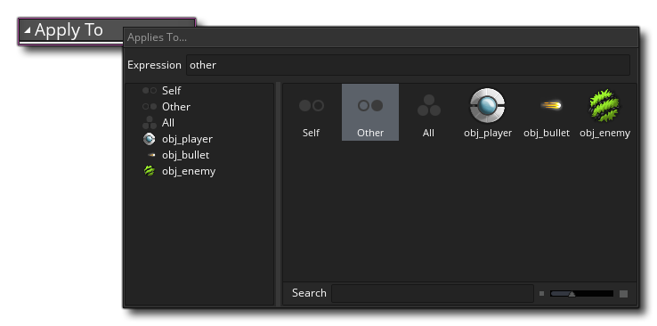
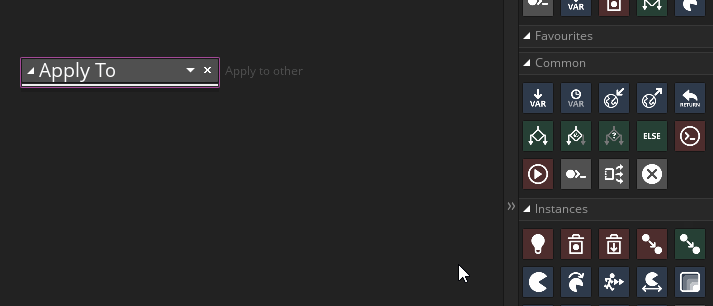
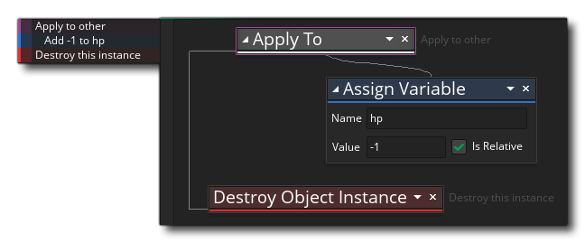

At the moment, the enemies just follow the player around and don't actually do or react to anything else. We need to fix that, so to start with we need to edit the Step Event again. We are going to expand on the current actions to include a check to see if the "hp" variable we initialised previously is less than or equal to 0, and if it is we are going to destroy the instance (remove it from the game room). This is done using the following actions, which you should add in after the current ones: 
The next thing to do is to make the "hp" variable actually go down, as currently that check will always return false since we only set the "hp" to 5 and nothing else.
Open up the object "obj_bullet" (if it's not open already). We need to add a Collision Event here to detect the collision between the bullet (the calling instance) and "obj_enemy" (the colliding instance):
 Now, in this event we will need to affect the "hp" variable of the colliding instance, and we saw that we could do this using the "point" method previously. However that won't work in this case, as there are multiple enemy instances within the room and GameMaker Studio 2 doesn't know which one you actually want to affect. So we can't write: 
That code will subtract 1 from ANY of the instances of "obj_enemy" in the room, and so is best used when we know that there is only one unique instance to be accessed. Instead we need to first of all tell GameMaker Studio 2 to change the "scope" of the following actions to affect the "other" instance in the collision using the action Applies To...  . When you drag this into the action workspace you then have to click the little arrow to the right and select a "target". The target can be an object, an instance or one of a couple of keywords, which in this case we want to be "other". Using that we are telling GameMaker Studio 2 that the following action blocks are to be run as if they were part of the other instance in the collisions actions - in this case the obj_enemy.

. When you drag this into the action workspace you then have to click the little arrow to the right and select a "target". The target can be an object, an instance or one of a couple of keywords, which in this case we want to be "other". Using that we are telling GameMaker Studio 2 that the following action blocks are to be run as if they were part of the other instance in the collisions actions - in this case the obj_enemy.

Next we add in the Assign Variable action just as shown above, only we chain it to the right of the Assign to... action, as we did for an "if": 
Finally we want to destroy the bullet instance by dropping an Instance Destroy action after (and outside of) the Applies to... action, so the final Collision Event looks like this: 
After we take the point of off the "hp" variable, we then call the action to destroy the calling instance (the bullet). Test game now and see what happens...